Your browser doesn't support the features required by impress.js, so you are presented with a simplified version of this presentation.
For the best experience please use the latest Chrome, Safari or Firefox browser.
Trabajo de Fin de Máster en Técnicas para la Investigación, Desarrollo e Innovación en Ciencias e Ingeniería.
Asistente de conducción en intersecciones mediante dispositivos móviles
Directora: Candelaria Hdez Goya
Alumna: Alexandra Rivero García
Índice de contenidos
- Introducción.
- Redes vehiculares: VANETs.
- Problema de las intersecciones.
- Desarrollo de resultados: CrossRoad.
- Conclusiones y trabajos futuros.
Introduction
- System to priorize vehicles at crossroads.
- Method for monitoring vehicles at road intersecctions.
- The system designed is CrossRoad.
(A passage control at intersections by a mobile vehicular network)
The main Objective:
- Improve driving safety by using an assistant.
- Decreasing the number of accidents.
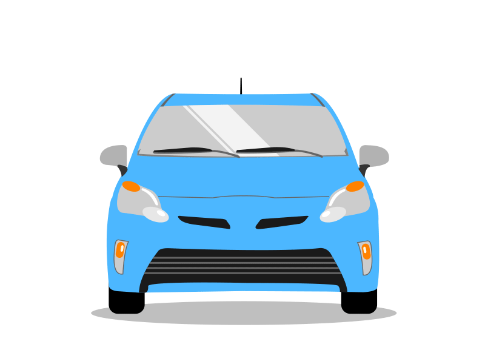
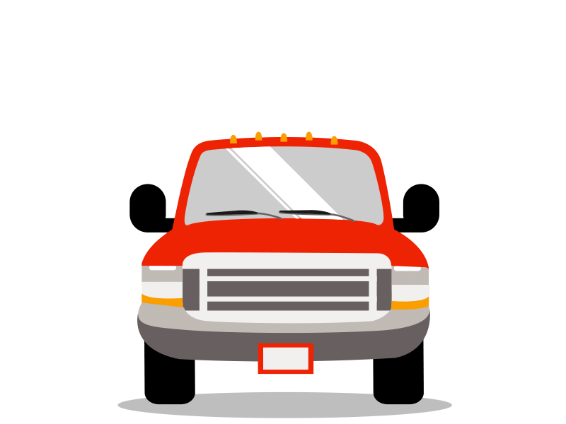
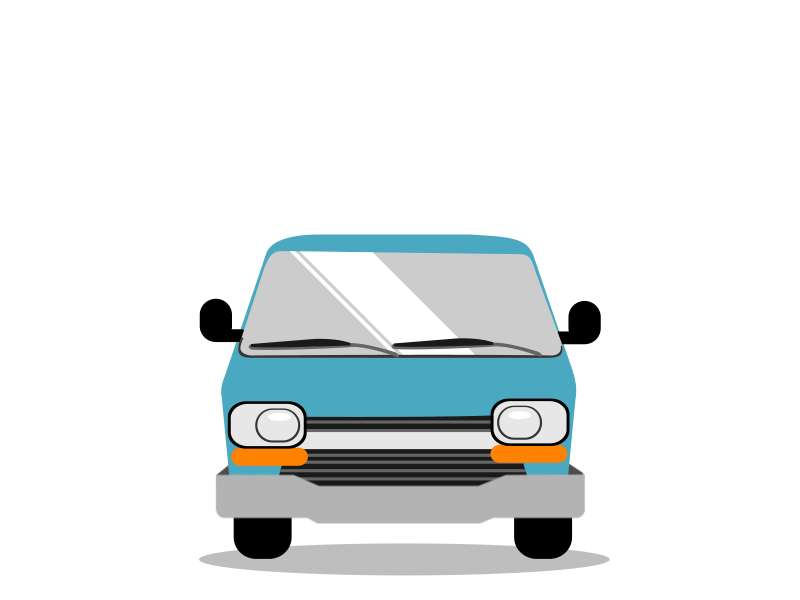
Vehicular Ad-Hoc Network (VANET)
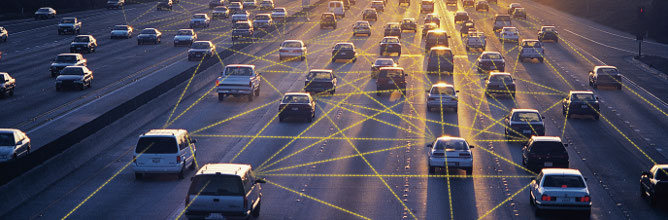
Redes Ad-hoc
- Redes inalámbricas descentralizadas.
- Sin dependencia de la infraestructura.
(Redes cableadas, routers o puntos de acceso)
- Cada nodo reparte y reenvía.
(Intercambio de datos dinámico)
Redes Ad-Hoc Móviles MANETs
VANETs
- Red en la que los nodos son vehículos.
- Redes dinámicas.
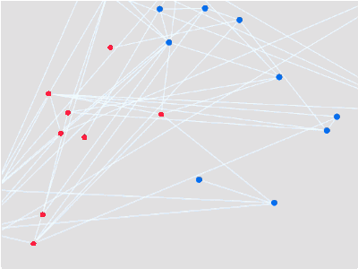
Ejemplo de comunicación VANET
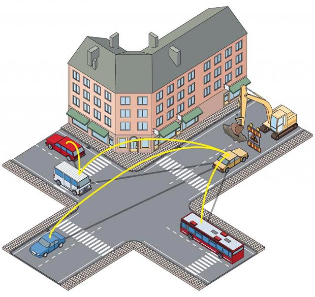
Idea "Simple" con desafíos teóricos y técnicos:
- Protocolos de enrutamiento.
- Rangos de transmisión.
- Frecuencias.
- Calidad del servicio.
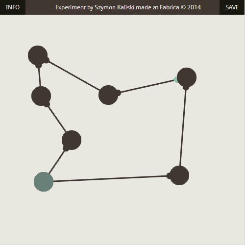
Tipos de comunicación en las VANETs
- Vehicle-to-Vehicle (V2V)
- Vehicle-to-Infraestructure (V2I)
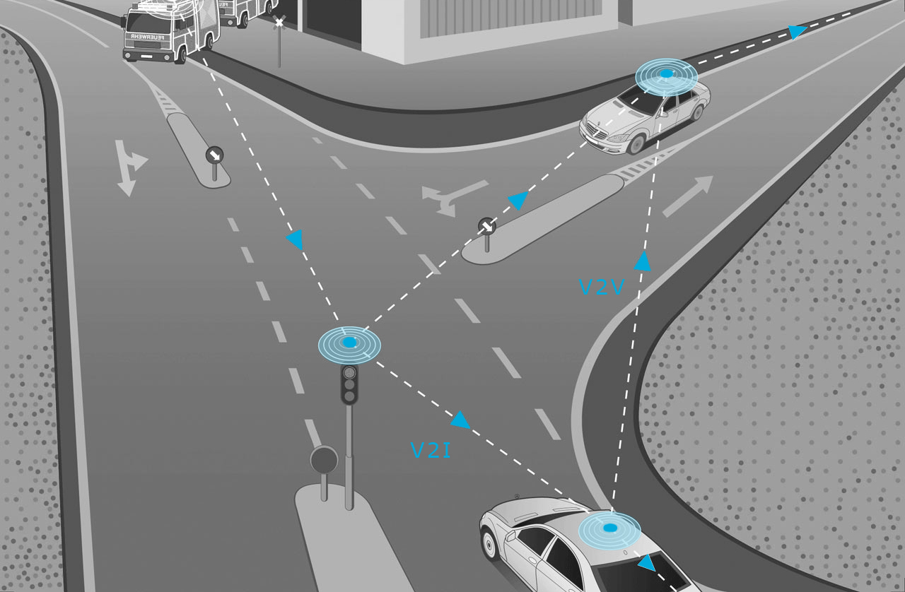
Configuraciones en la comunicación de las VANETs
- Propagación de alertas.
- Comunicación de grupo.
- Balizamiento.
- Alertas.
Propagación de alertas (V2V)
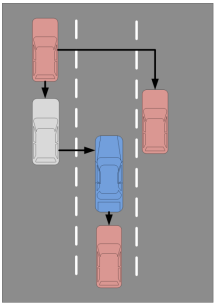
Envío de mensajes a un vehículo o grupo de estos, como vehículo de emergencia.
Comunicación de grupos (V2V)
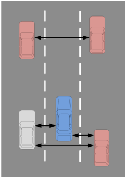
Envío entre vehículos con características específicas, estáticas o dinámicas.
Balizamiento (V2V)
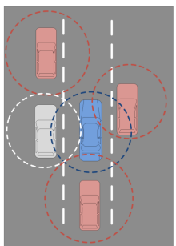
Los mensajes baliza se envían periódicamente con datos del vehículo (velocidad o estado de los frenos).
Alertas (I2V/V2I)
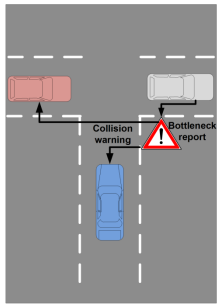
Envio desde la infraestructura cuando se detecta un peligro potencial. Útilies para la seguridad vial.
Requisitos de seguridad para las VANETs
- Identificación entidades.
- Auntenticación entidades/atributos.
- Preservación privacidad.
- No repudio.
- Confidencialidad.
- Disponibilidad.
- Información verdadera.
Tecnologías de comunicación inalámrica.
Wifi-Direct - Bluetooth - ZigBee - WAVE
(Wireless Access in Vehicular Environment)
Problemas: Limitada capacidad/cobertura y conexión con otros sensores.
La nube
WiFi - 3G - 4G/LTE
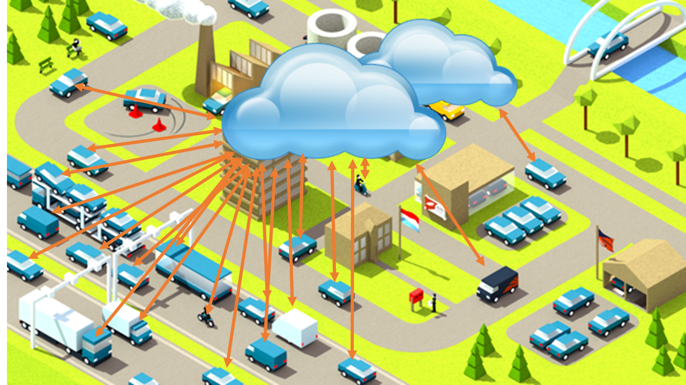
¿Qué podemos usar?
VANETs ubicuas.
Dispositivos Móviles Android.
Escenario
Intersecciones.
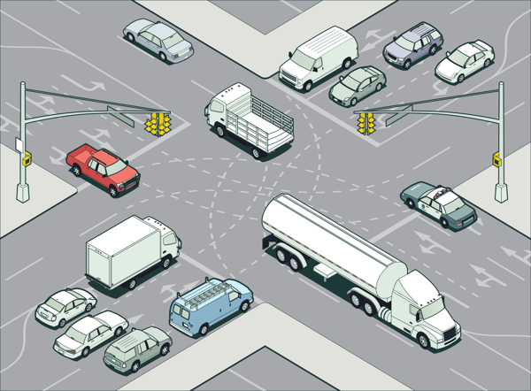
Intersecciones
Área en la que confluyen dos o más vías (ramales).
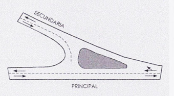
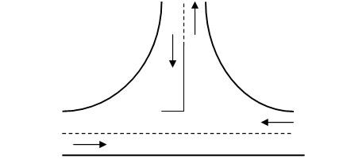
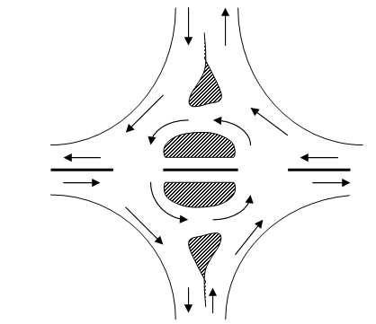
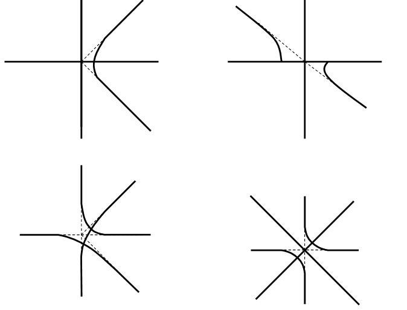
Asistente para intersecciones
Vehículos que circulen con la aplicación.
Objetivos
- Controlar y agilizar el paso.
- Garantizar fiabilidad.
(Entorno complejo para las comunicaciones)
- Mejorar seguridad vial.
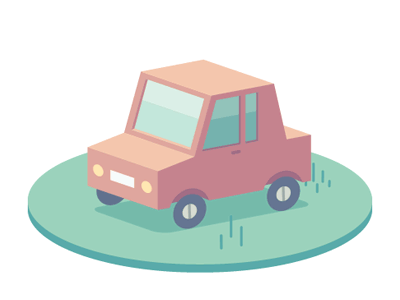
Algoritmo de prioridades de paso
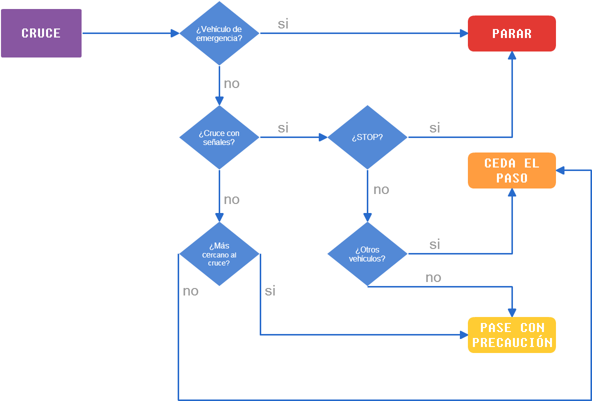
CrossRoad Estándar
- Localización del vehículo.
- Localización de los cruces cercanos.
- Información de prioridad.
(Mensaje por pantalla y de voz)
- Información de señales.
- Alerta de vehículos de emergencia.
- Otras funcionalidades :
(Información del tráfico, vista satélite y 3D)
CrossRoad Emergencia
- Botón para activar/desactivar el modo emergencia.
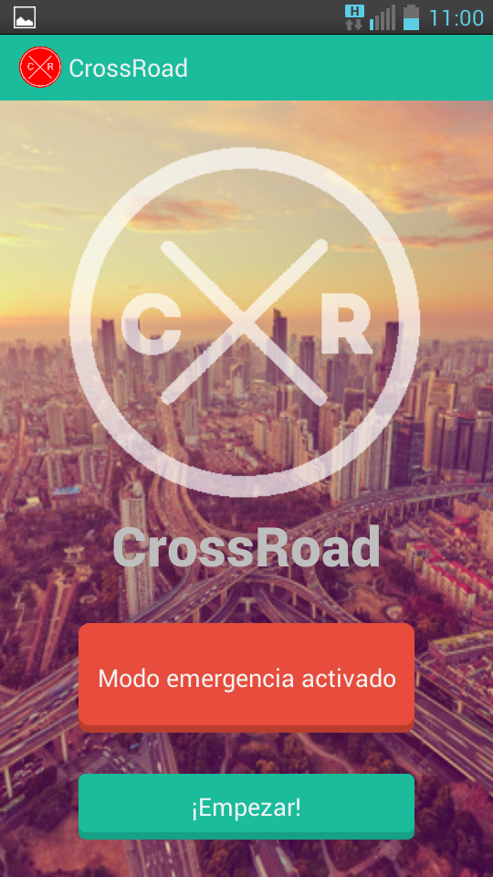
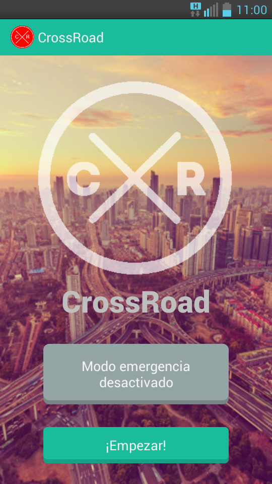
Diagrama de flujo de la comunicación
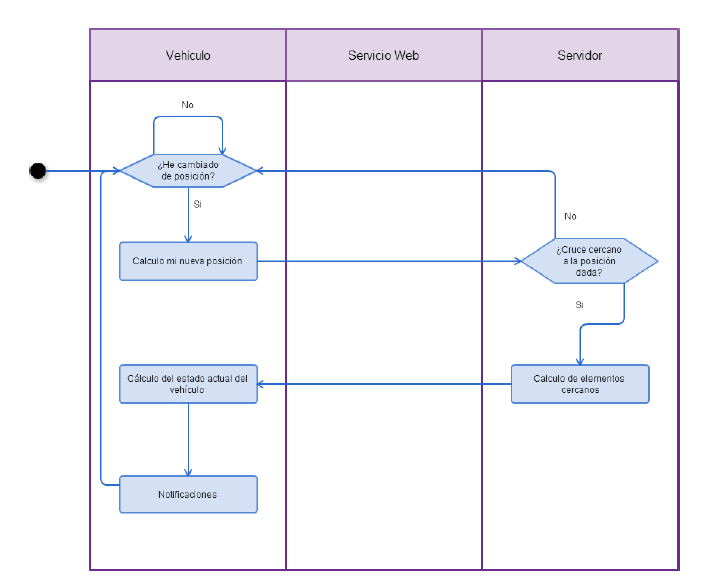
Plataforma
- Login para acceder a los recursos.
(Registro interno)
- Añadir/eliminar usuarios, cruces, señales, vehículos, vehículos especiales.
- Mapa con todos los trackings.
- Mapa con los tracking de un vehículo.
(Rango de tiempo)
- Búsqueda de vehículos.
- Listado de vehículos, trackings, señales y vehículos.
Servicio Web
- Registro de vehículos.
- Cálculo de eventos cercanos.
(Vehículos cercanos, señales de tráfico,
cruces, vehículos en emergencia)
- Cambio de modo de emergencia.
Conclusions
- Intelligent Transport Systems and intersections.
- Focusing on VANETs.
(architecture, operation and use cases)
- Alternatives avalaible to solve the problem of road intersections.
- System for assistance in intersections.
The result is building an ubiquitous VANET
Future work
- Adding an option to enable/disable emergency mode via NFCtags.
- Integration with other platforms.
- Creating an API to be used by other applications.
- Integration with RFID tags and sensors to control traffic lights and traffic signals ( I2V / V2I ).
Gracias
¿Preguntas?